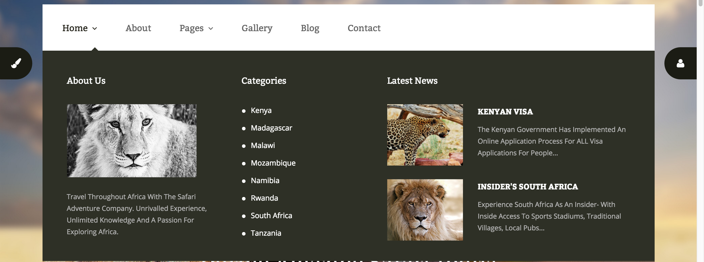
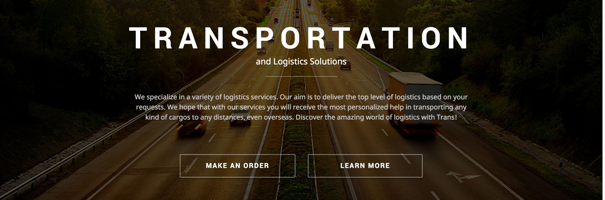
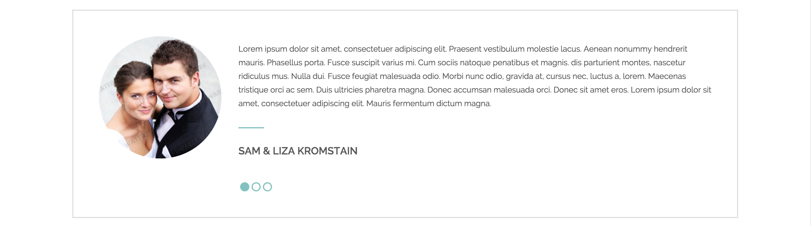
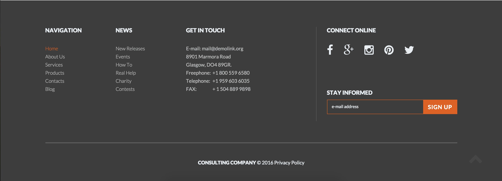
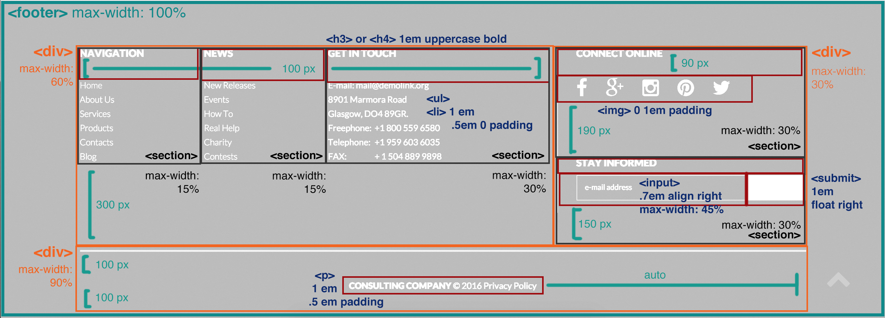

Components
Learning Goals
I've always had a difficult time with the position, top, bottom, left, right, and z-index properties, which I previously encountered in several JavaScript plugins (like image carousels). Building a simple header that sticks to the top of the page will allow me to practice the aformentioned CSS properties and learn the difference between position values (e.g. fixed and absolute).
Degree Connection
Headers are vital page elements containing crucial tools that guide user actions. Often, these include (but are not limited to): an escape hatch (usually in the form of a logo), a search bar, account login/details, and main navigation. Keeping this information above the fold allows users to quickly navigate the website without having to scroll or jump to the very top of the page. Using JavaScript, I can refine the header to display in the center of the screen and only affix to the top of the page if the user scrolls far enough down.
Feature-Rich Navigation Menu

Learning Goals
I can honestly say I've never made a navigation menu that goes beyond single or nested unordered lists, so building a feature-rich menu with multiple lists, images, and/or advertisments is an adequate challenge for me this month. Brief research shows that most HTML tags can be contained within a list item. I will likely revisit familiar elements (lists, divs, sections, block-level elements, etc.) and put them to use in exciting new ways.
Degree Connection
Long and verbose navigation menus take up valuable screen space and can overwhelm users. This is one of the first areas users will explore to find content on a website, so it should be categorized and labeled well, while still remaining succinct. Feature-rich navigation menus offer users more content and clarity in a smaller (and sometimes hidden, if using the hover pseudoclass) amount of space: great for both the client and the customer. Upon learning more server-side languages, I could use the additional navigation space to hold account information, shopping cart checkout, or advanced search features.
Full-Screen Call-to-Action (CTA)

Learning Goals
In previous courses, I learned how to design effective calls-to-action, but not code them. With as much frustration as I get from trying to find an appropriate, high-quality image to use for the background, I don't often put CTAs to use in my pages. I want to revisit what I already know, and expand upon my skills so that I can create a full-screen, filtered, and responsive call-to-action with added text, buttons, and/or search features to serve as focal points.
Degree Connection
A call-to-action is very important when a Web developer wants to encourage a user to take a specific action. This can take the form of a button, form, or input field positioned above a large hero image. Attractive images that take center stage above the fold garner attention and--with the help of color and other styling effects--convert Web traffic into memberships, sales, and/or dedicated, return users. I can expand on this concept to add a timed image slider, animation, or video.
Learning Goals
Parallax scrolling in particular, is a visual feature that is very common in my work industry (food and beverage), and I have next to no knowledge on how to recreate its effects. I figure there's a fair amount of positioning involved, which will help me reinforce one of my weakest coding skills. I want to learn how to bring content forward, create background shapes that act as visual queues, and scroll multiple background for visual interest.
Degree Connection
Scrolling down the page to find essential information can be a chore, especially if there's a lot of content to go through. Positining articles in conjuction with parallax scrolling brings important information to the front, similar in style to a call-to-action. Line is also utilized to help guide the eye towards important information, links, and/or articles.

Learning Goals
Aside from changing the color on buttons and links in hover state, I have yet to use CSS to manipulate images on mouse enter and exit. Placing information over images likely requires use of the display and z-index properties, the latter still fairly new to me. I would like to practice the creation of filters and positioning of text, images, and links upon hovering over an image.
Degree Connection
Typical Web users don't take the time to read every detail presented to them, often scanning the page in an F shape pattern (since the most essential content exists towards the top). Company contact/details are generally not popular enough to be placed in prime locations on the page; extranenous, non-essential information has a higher chance of being looked over. Using images instead of text adds visual interest for users, and allowing details to be stored in a hover state saves page space for developers. This feature can be built upon to add links in place of textual information. (e.g. e-mail, website, social media, web call, etc.)
Content-Rich Footer
Featured

Learning Goals
Footers are often overlooked or completely left out in most of my projects. Ocassionally, I might add one to balance out the page design, but they generally only get a single paragraph with a copyright/credit notice--sometimes social media icons if I'm feeling ambitious. I would like to practive my ability to create and arrange block-level elements in content-rich footer.
Degree Connection
Footers are important landmarks for both users and screen readers; they allow additional navigation and features that aren't essential or highly sought after, but convenient none-the-less. A content-rich footer has the ability to house contact details (e.g. phone, email), location information (e.g. address, Google Maps), related links (e.g. social media, rss feed), input fields (e.g. search, newsletter sign up), sponsors, copyright, and so much more. Grouping this content together in one place reduces the need for additional pages or sections on a page for presentation. I can enhance the footer by adding JavaScript time/date/location detection to display only pertinent information. (e.g. toll-free numbers if not local, hours if open or closed, etc.)
Style Breakdown
Font: Lato, sans-serif
Colors: rgb(54,54,54), rbg(189,190,191), rgb(220,98,38), rgb(255,255,255)
HTML Construction
- Create component with <footer>
- Use three <div> to separate content
- Put text, links, and input within <section>
- Follow <section> with <h3> or <h4>
- Arrange text and links in <li> within an <ul>
- Create links that contain social media icons
- Use <input> and <submit> for update form
- Contain copyright information in a <p>
Visual Deconstruction
